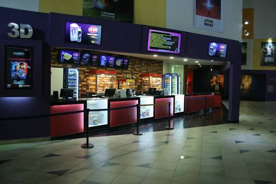
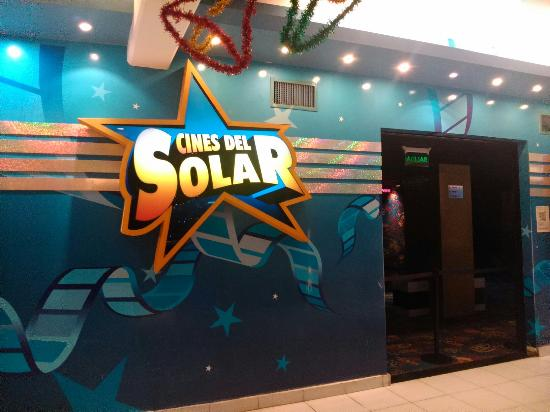

Cine Atlas Monteagudo
San Miguel de Tucumán
Encontrá los principales complejos de cine de San Miguel de Tucumán y Yerba Buena, consultá su ubicación y accedé a sus funciones disponibles.
San Miguel de Tucumán
San Miguel de Tucumán
San Miguel de Tucumán

Yerba Buena, Tucumán

Yerba Buena, Tucumán
Ubicación de los complejos de cine de San Miguel de Tucumán y Yerba Buena.
Complejo Cine Atlas ubicado en San Miguel de Tucumán.
Complejo Cine Atlas ubicado en una zona céntrica de San Miguel de Tucumán.
Hipermercado Libertad.
Complejo Cinemacenter ubicado en la zona de Avenida Roca de San Miguel de Tucumán.
Portal de Tucumán Shopping.
Complejo Sunstar Cinemas ubicado en Yerba Buena.
Shopping Solar del Cerro.
Complejo Cines del Solar ubicado en Yerba Buena.